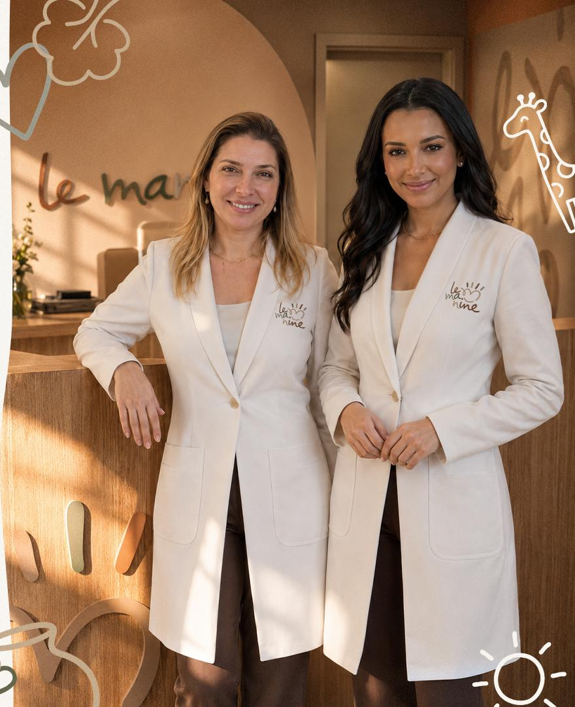

Nossa história
As mãos que moldam com afeto
A Le Manine nasce do encontro entre Bianca e Alyne e da vontade de cuidar da infância com mais tempo, escuta e qualidade.
De onde viemos
Um consultório onde pediatria e odontopediatria olham a criança por inteiro
A parceria começou na troca de experiências, passou pelo aleitamento materno e ganhou forma em um consultório onde a criança é olhada por inteiro. Bianca e Alyne se completam porque unem ação e escuta, resolução e planejamento, criança e família.
Juntas, constroem um cuidado integrado, em que corpo, sorriso e desenvolvimento são acompanhados com técnica, afeto e confiança.

Quem cuida
Bianca e Alyne
Bianca
É amorosa, dedicada e responsável. Traz uma presença prática e resolutiva, com atenção ao todo da criança, não apenas à odontopediatria. Acolhe, conduz e busca os caminhos certos para um cuidado mais seguro e completo.
Alyne
É otimista, prática, ética e acolhedora. Traz uma presença tranquila, racional e planejada, com foco em prevenção e orientação. Escuta os pais com empatia e conduz cada família com clareza e segurança.
O nome
le manine
Significado: “as mãozinhas” em italiano. Remete às mãos pequenas e curiosas da criança em fase de descoberta e às mãos das duas profissionais, cuidando juntas, com olhares complementares.
Um nome leve, afetivo e sofisticado, com ludicidade sutil. Traduz cuidado e acolhimento, sem parecer técnico ou óbvio.
Missão
Cuidar da saúde, do desenvolvimento e do sorriso das crianças de forma integrada, acolhedora e preventiva, oferecendo às famílias orientação clara, segurança e confiança em cada fase da infância.
Visão
Ser reconhecida como uma referência em cuidado infantil integrado, unindo excelência técnica, escuta atenta e uma experiência sensível para crianças e famílias.
Valores
Acolhimento, segurança, clareza, prevenção, respeito ao tempo da criança, ética, confiança, delicadeza e excelência no cuidado.
Moldando a infância com afeto.
Se você busca um cuidado atento aos detalhes, que respeita o tempo da sua criança, a Le Manine está pronta para acolher a sua família.
Agendar consulta